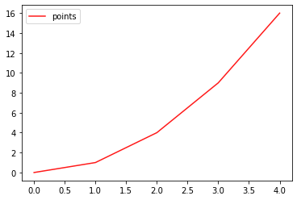

Functional Programming in Python
Imad Pasha | February 2021
If you’ve reached this point, you should be familiar with the basics of programming in python, in either an interpreter setting or in a .py script which you then run. Within these scripts, you can write multiple lines of code which set variables, manipulate them, and ultimately print or otherwise save values of interest.
The next step forward in the abstraction of how your code will be structured is known as functional programming. This refers to the collection of code into specific self defined functions, with bite-sized tasks that you can verify are working properly (unit testing) and which allow for easy debugging. Later, we will discuss an object-oriented approach to Python development though the use of classes, but even within these later frameworks, the fundamental unit of code is still the function (though it will go by the name method in the OOP style).
You already have plenty of experience using functions. When we import libraries like numpy or matplotlib we are importing functions and classes other people have written that are stored in those libraries. When I call
import numpy as np
x = np.linspace(0,2*np.pi,100)
my_wave = np.sin(x)
both np.linspace() and np.sin() are functions that someone on the numpy team wrote down and placed in the library. We know how to use these functions even though we didn’t write them because we read the documentation, i.e.,
help(np.zeros)
Help on built-in function zeros in module numpy:
zeros(...)
zeros(shape, dtype=float, order='C')
Return a new array of given shape and type, filled with zeros.
Parameters
----------
shape : int or tuple of ints
Shape of the new array, e.g., ``(2, 3)`` or ``2``.
dtype : data-type, optional
The desired data-type for the array, e.g., `numpy.int8`. Default is
`numpy.float64`.
order : {'C', 'F'}, optional, default: 'C'
Whether to store multi-dimensional data in row-major
(C-style) or column-major (Fortran-style) order in
memory.
Returns
-------
out : ndarray
Array of zeros with the given shape, dtype, and order.
The help function above spits out a lot of text, but the most relevant bit is at the top: The documentation shows us 1) what the function does and outputs, 2) what inputs it needs and in which order (and what data type these input should be), and 3) some examples of its use.
In this section, we will be talking all about functions: how to define them, how to document them, best practices in implementing them, and more. So lets dive in!
2.1 Defining Functions
Defining functions in python is easy. The absolute simplest function I could define would look like this:
def my_function():
pass
In the above example, we see that the special word def tells Python we are defining a function. We give it a name (my_function in this case) followed by parenthesis containing arguments (I have not supplied any). We end with a colon, the same way we would for a loop or conditional statement. Then, all code associated with my function gets indented (again, just like a loop or conditional statement).
You’ll notice I’ve put the word pass into my function. This useful word is special in Python (don’t use it as a variable name) and it tells the interpreter to just keep on walkin, nothing to see here. It’s a perfect thing to add when you want to define a function (remind yourself you need it) but don’t want to add any code to it yet.
But that’s boring! Let’s add some code now. A common task in Astronomical Python is to load a series of fits image files in a directory on our computer and stack up all the images into some storage container (like a multidimensional numpy array), as well as “extra” data from the fits headers like object name, exposure time, etc. Thankfully, the astropy library has a helpful function for reading in data.
However, the astropy functions we’ll use are specialized for general use. But for our specific program, we might want to make it easy to load up a whole directory exactly how we know we want to in only a single line of code.
In short, we want what’s called a wrapper. A function that combines several other function calls in a useful way (for us as least).
I’ll start by defining the base shell of the function:
def load_directory_images(path):
pass
I’ve given the function a recognizable name that tells us what the function does (loads images in a directory), and I’ve specified the first argument to the function. Arguments are, much like in a mathematical function like sine, what gets fed into the function in order to facilitate the calculation. In this case, that’s a path (string) representing the location of the directory on our hard drive.
Important note! When we set the name “path”, this is the variable name we’ll use inside our function. It is only internal to our function, and users can supply any variable they want (of any name) to our function. Whatever is in slot number 1 of the argument list will be assigned the temporary variable “path” while it’s inside the function.
2.1.1 Writing Documentation
When we printed out the documentation above for the numpy functions, there was a lot there. When writing functions for our own code, we generally do not need to be that intense — documentation depth should scale with how many people will use a given code (numpy is used by hundreds of thousands of users, so it needs rock solid documentation). However we should always at least somewhat document our code. Trust me. Ask anyone who has built research-generating code (i.e., hundreds of functions, thousands of lines of code, built over the course of 6 months to 3 years, ish) can tell you that you need documentation, so that even future-you can understand what you were trying to do.
To add documentation to your function, we use triple quotes as follows:
def load_directory_images(path):
'''
Loads a directory's worth of images into convenient storage units.
Requires astropy.io.fits.
'''
pass
Now, we can see that if I run the help() command on my function, I get this:
help(load_directory_images)
Help on function load_directory_images in module __main__:
load_directory_images(path)
Loads a directory's worth of images into convenient storage units. Requires astropy.io.fits.
Basically, I can now see my function’s documentation and know what it does.
2.1.2 Formatting your Documentation + Best Practices
What I did above technically counts as documentation. But there are a few extra things we really need to make it useful. Let’s improve our documentation:
def load_directory_images(path):
'''
Loads a directory's worth of images into convenient storage units.
Requires astropy.io.fits.
Note: All Images in directory must be of same shape.
Parameters
----------
path: str
path to the directory you wish to load, as a string.
Returns
-------
image_stack: array_like
A stack of all images contained in the directory.
Array of shape (N,X,Y) where N is the number of images,
and X,Y are the dimensions of each image.
image_dict: dict
A dictionary containing headers for each image, the keys
are the same as the indices of the corresponding
image in the image_stack
'''
pass
Cool, now our function is much better defined. We know what needs to be input, what data types they need to be, and even have a word of warning (only works on directories where the fits images are the same dimension). I realized this would be true when writing the documentation for image_stack, so writing documentation at least to this level up front can sometimes help clarify what you are trying to do with a function in the first place and catch potential pitfalls (we’ll want to catch that size issue within the actual code too).
You may have noticed that I have a very regular system for showing the parameters and return values, i.e., name : dtype followed by an indented line with the description. You need not do exactly this when you’re first starting, and can do anything within the triple quotes in terms of formatting. However, as we move into higher level programming, you may write code that you have to host on Github and which needs an actual documentation website like a ReadtheDocs.io. You may have used such a site for research code you’ve downloaded and used. These sites are built using automatic frameworks, e.g., Sphinx, which scrape your entire codebase and build the site for you automatically. Super convenient! But, these tools require your documentation be formatted a certain way. So, it’s never too early to get into the habit of writing documentation recognizable by these tools.
2.1.3 How detailed is too detailed?
Sometimes we’re just doing some quick exploratory data analysis (EDA) and are writing a quick function to extract and plot some quick data. Writing good documentation takes time, and there’s a tradeoff in efficiency if you stop to write good documentation for every function.
Personally, I have two lines in the sand that I use to determine the type of documentation to write. For EDA and other quick script type things (essentially, playing around, and things that won’t end up in the actual paper), I don’t bother with documentation or I write a quick one-liner. For my own research code, which will produce outputs I publish in a paper, I write documentation that is at minimum a detailed description, and if I plan to publish my code along with the paper, then I use full documentation as shown above. If you are writing code to be used by others, then it is absolutely essential to write full scale, formatted documentation.
2.2 Back to Our Function: Checking the Input
Often, a useful first step in writing a function is confirming that the inputs adhere to the data types, dimensions, or other rules we’ve established in our documentation. Why? Because if inputs do not meet these standards, our function may not operate as intended. A common saying in the industry is “garbage in, garbage out”. Often, we trust that a user (or us) entering bad data (or wrongly shaped, or typed, data) into our function will cause a catastrophic failure which causes the code to stop and throw an error. For example, having two images of different dimensions in our directory will throw an error when we tell numpy to stack those arrays.
But what is even more insidious, and harder to track down, than the above, is when our code inside our function runs without error, despite the input being incorrect. If this happens, the function may output garbage that gets fed into other functions, and tracking down the bug may become hard.
As usual, input checking is a trade off between time spent writing it and further progress, and once again, I usually implement such steps at the “production code” or “this is going in the paper” stage.
Our only input to our sample function here is a string path to a location, so there are two things we can check: first, that it is a string, and second, that the location exists on the computer of reference. Both of these would end up flagging errors later (when we tried to use astropy's loading function using path, but let’s for completeness do it ourselves:
import os
def load_directory_images(path):
'''
Loads a directory's worth of images into convenient
storage units. Requires astropy.io.fits.
Note: All Images in directory must be of same shape.
Parameters
----------
path: str
path to the directory you wish to load, as a string.
Returns
-------
image_stack: array_like
A stack of all images contained in the directory.
Array of shape (N,X,Y) where N is the number of images,
and X,Y are the dimensions of each image.
image_dict: dict
A dictionary containing headers for each image, the keys
are the same as the indices of the corresponding
image in the image_stack
'''
if not isinstance(path, str):
raise AssertionError('Path must be a string.')
if os.path.isdir(path) == False:
raise OSError('Path does not point to a valid location.')
return
My two checks have now been implemented. First, we check that path is an instance of type string — if it isn’t, we raise an error. I’ll talk more about defining errors, raising them, etc., later, but AssertionError and OSError are two that are built into python which mean “I am asserting a variable be a certain way and it isn’t” and “You’ve messed up on something related to input and output locations on your computer”. The difference is superficial, it just further informs the user (or us) of what type of error occured in our code, which our error message we’ve added also does.
You’ll also notice I’ve changed the pass into a return. Returning is what we do at the end of a “finished” function, where we take values calculated in the function and “return” them to the overall code (more on this in a sec).
Let’s test my input-checking:
custom_path = 2
load_directory_images(custom_path)
---------------------------------------------------------------------------
AssertionError Traceback (most recent call last)
<ipython-input-27-0d9b0ed7f57c> in <module>
1 custom_path = 2
----> 2 load_directory_images(custom_path)
<ipython-input-26-f6f134fb9056> in load_directory_images(path)
20 '''
21 if not isinstance(path, str):
---> 22 raise AssertionError('Path must be a string.')
23 if os.path.isdir(path) == False:
24 raise OSError('Path does not point to a valid location.')
AssertionError: Path must be a string.
Great! We’ve shown that my AssertionError correctly triggered when custom_path was not given as a string.
custom_path = '~/FolderThatDoesntExist/other_folder/'
load_directory_images(custom_path)
---------------------------------------------------------------------------
OSError Traceback (most recent call last)
<ipython-input-28-9f0c7a13997b> in <module>
1 custom_path = '~/FolderThatDoesntExist/other_folder/'
----> 2 load_directory_images(custom_path)
<ipython-input-26-f6f134fb9056> in load_directory_images(path)
22 raise AssertionError('Path must be a string.')
23 if os.path.isdir(path) == False:
---> 24 raise OSError('Path does not point to a valid location.')
25 return
OSError: Path does not point to a valid location.
Great! This time, I made up something that is indeed a string, but that isn’t a location on my computer, and my check, that os.path.isdir() is True, threw an error.
As a final check, let’s put in a string that should work (a real location):
real_path = '/Users/'
load_directory_images(real_path)
And, as expected, we see that our real path throws no errors.
We’re now ready to actually write the function itself! I know that seemed like a lot of up-front effort, but notice that the number of lines isn’t that large (especially if we had a one-liner documentation), and over time, you’ll be able to add input checking quickly and efficiently. It’s also always good to remember you can add documentation and input checking after the fact (but not too long after)!
2.3 Local Scope and Global Scope
Before we go through the actual details of this particular example function, I want to talk about the concept of scope within our Python programs. So far, when working with scripts in which every line is a declaration or calculation or loop or conditional, everything exists within what is known as the global scope of the code. That simply means that if I were to run my script in the interpreter, all the variables (at least, their final states) would be accesible to me in the interpreter, and I can use any previously defined variable anywhere I want in my code.
One caveat to this is iterators, which are created when you set up, e.g., a for-loop. In this case it’s even more confusing: the final iterator will still be around after the loop, e.g.,
for i in range(10):
continue
i
9
We see that I wrote a for-loop which did nothing but iterate over a list [0,1,2,3,4,5,6,7,8,9]. But later, I called the variable “i” and it was still 9, its last value from the loop.
That seems a little sketchy, and it kind of is. It is part of the reason we use standard iterator variables like i, j, k in our loops… because they’re less likely to end up overwriting an important variable we want to use later. Of course, if I set up a new loop using i, it will be properly overwritten at the start of the loop.
So, as I’ve described it, all our variables are all swimming together in the big pool that is global scope, and any variable can by accessed anywhere.
That’s bad.
Let me re-iterate. While that way of being, which we get used to in basic scripting, is extremely convenient, it is also dangerous, and it makes tracking down bugs (in which one variable gets set or calculated wrong and this issue propogates through the code into our final answer) extremely difficult.
If you’ve ever tried to type an absurdly complicated expression into mathematica (or Wolfram Alpha), you’ve seen this effect. Garbage answer comes out, but the only way to figure out why is to start breaking down the terms of the expression into small pieces evaluated separately. This is exactly what we want to do with our code, and functions give us the ability to do this.
Functions have what is called local scope. This means that any variable defined within a function stays within that function. It can’t be accessed from outside the function, it can’t be messed with or overwritten by any code outside the function, it’s completely walled off and isolated. Once we take a string and input it to our sample function here as path, for the purposes of the inside of the function, path is totally isolated.
A Huge Caveat. Local scope is not two directional. Anything accessible in the global scope is also accessible in the local scope of a function. It is the reverse that isn’t true. Observe:
a = 3
b = 5
def func(c,d):
return a+b+c+d
func(1,2)
11
Welp. My function only takes 2 arguments, c and d. But inside the function, I wantonly disregard local scope and utilize a and b as well. As suggested by the name, global scope is truly global, even in functions.
This seems to defy our desire to isolate small units of code (single chunks of calculations) into different, separated functions. So what’s the solution?
Solution number 1: Simply never call variables inside functions that aren’t either inputs to the function or created within the function. For example:
a,b = 3,5
def func(a,b,c,d):
return a+b+c+d
func(1,2)
---------------------------------------------------------------------------
TypeError Traceback (most recent call last)
<ipython-input-43-00c7caa4d412> in <module>
3 return a+b+c+d
4
----> 5 func(1,2)
TypeError: func() missing 2 required positional arguments: 'c' and 'd'
By specifying that the variables we call “a” and “b” in our function are positional arguments, we have overwritten the global scope and told our function that the “a” and “b” it needs to use are ones supplied by the user. Now,
func(a,b,1,2)
11
returns the same value, but I knew exactly what was going on along the way.
Another solution, of course, would be to have no variables in the global scope at all, that is, have everything isolated into functions. But this is typically impractical, most general use scripts we write will have at least some code hanging in the global name space. So solution number 1 is the most solid way to ensure you aren’t letting bugs “leak” into your functions.
2.4 But Wait, Didn’t Debugging Just Get Harder?
If you’ve spent any time writing functions, you may have run into the following issue: You write a simple, but maybe 15 line function to do some task. You run it, and there’s a bug – not an error raised, but the output is weird. But unlike in your script, you can’t just look at the intermediate variables in the calculation anymore, because they were in the function!
def my_func():
var = 1
var2 = 3
return var + var2
print(var)
---------------------------------------------------------------------------
NameError Traceback (most recent call last)
<ipython-input-46-2ea387ab95ff> in <module>
----> 1 print(var)
NameError: name 'var' is not defined
When we run commands in the ipython interpreter, or jupyter notebook, or wherever, we are in the global namespace, so we can’t get to the variables created inside the function. This often leads to the insertion of a multitude of print statements into our functions to check intermediate steps, but even this isn’t ideal; sometimes we need to mess with those variables, interrogate their shape, or length, or other properties.
There are two ways to go with this. When you’re starting out, I recommend play testing your code outside of functions in the global namespace, tweaking and bugfixing until things work. Then, when you’re satisfied, copy that code into a function. Once you get more comfortable with high level programming, there are actually industry solutions, e.g., software that lets you actually “jump into” the namespace of a function and muck around. This is awesome, but not necessary when you have the time and space to just test the code going into functions in a script environment or jupyter notebook cell first.
Enough jabbering! Let’s get back to our example function. As I noted earlier, astropy has a module that lets us load images in the fits format easily. If you’re interested in learning more about the ins and outs of these methods, check out the section on astropy as well as their own website, which has solid documentation. For now, I’ll just use their tool:
from glob import glob
from astropy.io import fits
def load_directory_images(path):
'''
Loads a directory's worth of images into convenient storage units.
Requires astropy.io.fits, glob.
Note: All Images in directory must be of same shape.
Parameters
----------
path: str
path to the directory you wish to load, as a string.
Returns
-------
image_stack: array_like
A stack of all images contained in the directory.
Array of shape (N,X,Y) where N is the number of images,
and X,Y are the dimensions of each image.
image_dict: dict
A dictionary containing headers for each image, the keys
are the same as the indices of the corresponding
image in the image_stack
'''
if not isinstance(path, str):
raise AssertionError('Path must be a string.')
if os.path.isdir(path) == False:
raise OSError('Path does not point to a valid location.')
files_in_dir = glob(path)
image_stack = []
header_stack = {}
for i,f in enumerate(files_in_dir):
with fits.open(f) as HDU:
image_stack.append(HDU[0].data)
header_stack[i] = HDU[0].header
image_stack = np.array(image_stack)
return image_stack, header_stack
The exact details of the above code aren’t super important, as long as you see and understand how this is now all wrapped into the function and the two quantities of interest are output. You may notice some assumptions built into the code, such as that the image and header of the fits file are stored in the 0th extension of the HDU (don’t worry if that means nothing to you right now). For astronomical data from telescopes, this is almost always the case, but this would be an example of personal code in which we knew the format of the fits images we were trying to load and thus which extension to choose. It’s a useful aside, however, to consider that if we were writing general use code for a pipeline that would see many different fits files of different internal storage systems, we’d need more robust code for dynamically loading them this way.
2.5 Chaining Functions Together
Once you start writing your code into functions, you’ll find that the output of function one tends to become the input of function two. For example, I could write a new function:
def median_image(image_stack):
'''
Takes a stack of images and returns the median image.
Parameters
----------
image_stack: array_like
stack of images, first dimension being image index.
Returns
-------
median_image: array_like
single image of the median of the input images
'''
median_image = np.median(image_stack,axis=0)
return median_image
Now, if I wanted to median the first three images in my full stack, I could feed the following
image_stack = load_directory_images(image_path)
first_3 = median_image(image_stack[0:2])
I again want to emphasize that we can call our variables whatever outside the functions and then feed them in. Often though, the names end up being similar or the same.
You might be wondering why you would write a function that had a single line of code as its calculation. The short answer is, you wouldn’t – my median_image() function adds so little beyond your general use of np.median() that it isn’t worth writing. But usually in Astronomy… we don’t just want a median. We want… say… a sigma clipped mean. Now that would take a few lines to accomplish, and is probably worth writing a function for.
As a general guideline, I tend to put something in a function if it
- Does a single “task” or “unit” of my program
- Has more then ~10 lines OR
- Is only 3-5 lines but is used SO DANG OFTEN in my code that writing one line instead of 3 every time saves me work.
2.6 The Concept of Main( )
So far, we’ve discussed the way one formats functions, and how to take what’s output from a function (i.e., listed in the return statement) and save it to a new variable (see the above example), which can then be put into other functions, etc. How does this actually flow in a more major script’s workflow?
One of the simplest ways is through a main() function. Let’s say I’ve written four functions which do the following:
- Load the images from a directory into a stack
- Cleaned each image somehow (maybe removing cosmic rays or bad pixels)
- Aligned the images (which were, say, dithered)
- Created “coadds” of the images by stacking them in various ways (mean, clipped mean, median, weighted mean).
Each function assumes general input and has general output. To make it specific, I could write a function, which we often simply call main(), like this:
def main(image_dir,cleaning_keyword,alignment_keyword,coadd_keyword):
image_stack, header_stack = load_directory_images(image_dir)
cleaned_images = clean_images(image_stack,cleaning_keyword)
aligned_images = align_images(cleaned_images,alignment_keyword)
coadded_images = coadd_images(aligned_images,coadd_keyword)
return coadded_images
This would usually be the last function defined in our code, and we can see that we here indicate that main takes in all the info needed to run all the functions properly (more on this in a second). Assuming that all works, we could then open a terminal, run our python script, and then simply run something like final_output = main(inputs) function to run everything in sequence and get the final output.
But wait, it gets even easier than that! At the bottom of our Python script, below the main and other functions, we can add the following:
if __name__ == '__main__':
main(image_dir,cleaning_keyword,alignment_keyword,coadd_keyword)
What is this? The above is a conditional statement that checks whether our current Python file has been run. Essentially, when I open an ipython interpreter and type run myscript.py, Python automatically sets a “secret variable” called __name__ to __main__, because the script is being run. You can put whatever you want inside this block, which is only True if you run the script entirely. In this case I’ve chosen to put a function call to my own main() function inside. Now, if I open the interpreter and type
run myscript.py
It will execute my main() call automatically, without me having to type in main(blah,blah) into the terminal myself.
You may be wondering why you wouldn’t simply have a call of your main function at the bottom of your script, without this weird conditional. And you’re right: If you did that, the same thing would happen, and running the script would then run your main call, hence running all your functions. But something we haven’t talked about yet, but will talk about in detail soon, is the idea of importing your own functions between python files. When you begin doing this, it becomes considerably more important to have actual executions tucked away inside these conditionals that only run if our target file is run directly in the interpreter, rather than imported into another script.
2.7 Flexible Functions: non-positional arguments
Thus far, our discussion of the definition of functions has only included what are known as positional arguments. When I define a simple function like the following:
def func(a,b,c,d):
return (a+b-c)*d
You can see clearly that the position of the four variables in the argument list matters. Whatever the first number I supply is will be deemed a, the second number I feed will be b, and so on. And this affects the output now, as an order of operations has been established (rather than a simple sum). If I flip around the order of the numbers I feed in, I’ll clearly get a different answer.
There are several other forms of argument, beyond positional. The first is an optional, default, or key word argument (the three are used interchangeably). This is extremely useful when we want to obey the golden scope rule above about not using any variables not asked for as arguments, but we do know that this value often takes a single value.
To give a concrete example, let’s say I want to calculate the sine of some values in my code, and usually the angles I’m working with are in radians (which is what np.sin() requires) but sometimes they’re in degrees. I can write a quick wrapper for my sine function as follows:
def my_sin(x,units='radian'):
if units=='radian':
return np.sin(x)
elif units =='deg':
new_x = x * np.pi / 180.0
return np.sin(new_x)
The way this works is that my function assumes units to be “radians” unless otherwise specified:
my_sin(np.pi)
1.2246467991473532e-16
We see this returns 0 (to computer precision) as expected. However, if I specify different units:
my_sin(90,units='deg')
1.0
The code knew to convert my degrees into radians and then return the np.sin() value.
A cool thing about these types of arguments is that because they are linked to keywords (e.g., ‘deg’ was linked to the variable units), they are not positional. A great example of this comes from the matplotlib library. Plotting functions in this library tend to have a bunch of optional arguments with defaults set, but which you can change. If you use the keyword for those parameters, their order doesn’t matter:
import matplotlib.pyplot as plt
x = np.arange(5)
y = x**2
plt.plot(x,y,ls='-',color='red',ms=5,label='points',alpha=0.9)
plt.legend()
<matplotlib.legend.Legend at 0x7f9981023610>

Now see what happens if I change around the order of the non positional arguments (for plt.plot(), the only positional arguments are x and y, so these must always be supplied as the first two arguments):
plt.plot(x,y,alpha=0.9,color='red',ms=5,ls='-',label='points')
plt.legend()
<matplotlib.legend.Legend at 0x7f9981f00ca0>

We get exactly the same plot.
One important note about keyword arguments is that, of course, they all must be supplied after the positional arguments. For example, if I ran
plt.plot(x,alpha=0.9,y,color='red',ms=5,ls='-',label='points')
File "<ipython-input-58-1fd2328cc66e>", line 1
plt.plot(x,alpha=0.9,y,color='red',ms=5,ls='-',label='points')
^
SyntaxError: positional argument follows keyword argument
Python helpfully tells me that a positional argument (one not assigned to a keyword) came after a keyword argument, and this is a no-no. In short, if you define a function with three positional arguments and four keyword arguments, it might look like:
def func_args(x,y,z,a=1,b=25,c=None,d=False):
if d:
return x+y+z
elif c is not None:
print('wow!')
else:
return x+b
The above function is of course nonsensical, but make sure you understand the code flow that occurs (try it out yourself! Run the function while only supplying x,y,z values, then while messing with changing d from False to True or c to anything.
2.8 Even more flexibility! *args and **kwargs
What if a situation arises where we want our function to accept an unlimited number of arguments? To give a simple example: What if I want to write a sum() function that sums up as many numbers as you put into it? Of course, we could write a function that takes a single argument as a list or array, but for the sake of this example, how would we allow the user to enter as many numbers as possible?
The answer is with the beauty of *args. Let’s take our sum example:
def mysum(a,b,*args):
running_sum = a+b
for i in args:
running_sum+=i
return running_sum
mysum(1,2)
3
mysum(1,2,3,4,5,6)
21
Cool, right?
The concept is actually rather simple. When we add *args to the end of our list of arguments for our function, it tells Python to take any additional supplied arguments and store them in a list which inside our function will be known as args. I can then do things with that list (in the example, I iterated through them and added them to the initial sum of the positional arguments. Of course, since they’re already a list, a faster method would be:
def mysum(a,b,*args):
return a+b+np.sum(args)
where by faster I mean both in lines of code and computationally (vector sums over an array or list are always faster than a for-loop; more on that in the chapter on optimization).
But what if the extra arguments we want to accept aren’t in just any order, and we want to track that somehow? Naturally, the solution is similar, but instead we’ll use the signifier **kwargs. This tells our function to accept any number of additional keyword arguments, like the ones we’ve been discussing above. For example:
def pretty_print(string,**kwargs):
print(string)
My pretty_print() function now requires a string input… but is happy to accept any other kwargs I throw at it:
pretty_print('Hello, world!',subtext='Ive had my morning coffe',energy_level=5)
Hello, world!
What happened to those extra keyword arguments? Like the example for *args, they got stored, but this time into a dictionary of name kwargs, and can be accessed in the function. Let’s use one:
def pretty_print(string,**kwargs):
print(string)
if 'sep' in kwargs.keys():
print(kwargs['sep'])
pretty_print('Hello, World!',sep='----------------')
Hello, World!
----------------
Our function is still agnostic to any extra keywords supplied. But, IF one of those keyword args happens to be sep, my function does something special: it yanks the value of that key from the internal dictionary of kwargs and in this case prints it.
The above examples provide a base level of use… but may not seem that exciting. Why not just make sep an optional keyword of my pretty_print() function?
Once again, the simplicity of the example belays the true use: threading extra arguments through multiple functions. Let’s say I have a main() function in my script, which only take a few main parameters that set up my run. And let’s say that buried inside my main() function is a function call to pretty_print() which tells me my code finished, say, aligning the images. That would look like this:
def main(image_dir,cleaning_keyword,alignment_keyword,coadd_keyword):
image_stack, header_stack = load_directory_images(image_dir)
cleaned_images = clean_images(image_stack,cleaning_keyword)
aligned_images = align_images(cleaned_images,alignment_keyword)
pretty_print('Finished Aligning Images, moving on to coadds.')
coadded_images = coadd_images(aligned_images,coadd_keyword)
return coadded_images
The Above is a pretty common way to track our code progress in academic code. But you may notice an issue – even if I setup a keyword argument in pretty_print() which takes in the separator, i.e.,
def pretty_print(string,sep=None):
print(string)
if sep is not None:
print(sep)
pretty_print('hello!')
hello!
pretty_print('hello!',sep='------')
hello!
------
The problem is, my main() function doesn’t have an argument, positional or otherwise, that takes in sep. You can see that if every function inside main() has several optional arguments, and we wanted the ability to adjust them from a function call of main(), we’d have to add all of those arguments as optional arguments of main() as well. That’s both messy and a huge pain. Instead, we can do the following:
def main(image_dir,cleaning_keyword,alignment_keyword,coadd_keyword,**kwargs):
image_stack, header_stack = load_directory_images(image_dir,**kwargs)
cleaned_images = clean_images(image_stack,cleaning_keyword,**kwargs)
aligned_images = align_images(cleaned_images,alignment_keyword,**kwargs)
pretty_print('Finished Aligning Images, moving on to coadds.',**kwargs)
coadded_images = coadd_images(aligned_images,coadd_keyword,**kwargs)
return coadded_images
The above necessitates that each interior function have been defined to allow **kwargs to be input (the way pretty print did in line 69). But what will happen now is I can run main() and feed in any additional keyword arguments for any of the interior functions and every function will be fed the full set, but can pick out the ones relevant to it using a if ___ in kwargs.keys() type mechanism.
You may sense a danger here, which is that multiple interior functions of yours may have some check like the one above that checks for the same keyword argument. That would be bad, if the input keyword arg was only meant to refer to one of the interior functions.
The trick then, is to have, for example, pretty_print()''s check look in the kwarg dictionary for something called pretty_print_sep instead. At the outer layer, you would then add that if you wanted it to get to your pretty_print() function.
One additional note on the formatting: the asterisk, “*” (or “**”) has two meanings as I’ve used them throughout codes above: “pack”, and “unpack”. When you use the “**” in your function definition, it is telling your function to take all additional keyword arguments and their values, and pack them into a dictionary called kwargs accesible within the function. However, in the last function above, I’ve done exactly that in the definition line of main(). Hence, some dictionary called kwargs was created and I could access it as follows:
def main(image_dir,cleaning_keyword,alignment_keyword,coadd_keyword,**kwargs):
print(kwargs)
image_stack, header_stack = load_directory_images(image_dir)
cleaned_images = clean_images(image_stack,cleaning_keyword)
aligned_images = align_images(cleaned_images,alignment_keyword)
pretty_print('Finished Aligning Images, moving on to coadds.')
coadded_images = coadd_images(aligned_images,coadd_keyword)
return coadded_images
For clarity, I’ve shown that a regular dictionary called kwargs exists within main() due to the **kwargs in its definition – regardless of what I do with it.
So why the “**” in the functions below?
The second use of that symbol is unpacking. When you use “*” or “**” in a function call, rather than definition, it assumes that the following word (args or kwargs) refers to a list or dictionary, and actually unpacks them into separate inputs to the function, whether they be just values (like in our my_sum() example, or whether they be keyword arguments and their values via a kwarg=value,kwarg2=value2 type system.
This explains why I actually used the “**” in both the definition of main() (to get the extra kwargs in, and pack them into a dictionary), as well as in the calls to other previously defined functions, to unpack that dictionary back into function keyword arguments passed into the functions.
The use of args and kwargs is definitely intermediate in skill progression — your codes may not need it right away. But as they grow more complex, it is good to be aware of this highly flexible way of dealing with function inputs, because at some point you’ll have a code that is better off for using it.
2.9 Testing Function Outputs: Unit Testing
Earlier, we discussed the testing of inputs to your functions to ensure proper data types or any other restriction your function needs to produce sensible results. What about the output?
When we write functions, the goal is to take a large process (like reducing a set of data from raw images to science spectra) and reduce it into small, repeatable, single-task chunks so we can evaluate that each step is performing properly and independently. During the development of such a code, and such functions, you likely test the functions outputs yourself, manually — i.e., put in some sample data, make sure the output of the function makes sense.
The problem is that code lives and breathes. After inserting your code into a larger framework, you’ll find you have to go back and tweak that function, add an extra input or output, modify one part of the calculation. A more advanced, but valuable way to ensure your functions still do what you want them to is by implementing what are known as unit tests.
Unit tests are extra pieces of code that throw sample problems with known outcomes at each of your production functions and ensure that the functions are operating as expected. For large scale collaborations with intense pipelines, the amount of code that exists in the unit tests may even exceed, or vastly exceed, the amount of production code actually doing the science! But it is these tests that make the scientists confident in every step of their pipeline, even as it evolves and changes over time.
While that sounds daunting, implementing unit testing is less challening than it sounds. There are several frameworks that handle the unit testing for you. In this example, we’ll be using pytest.
Pytest is pip installable, and simple to use. Simply create a file that starts with test_ or ends in _test.py somewhere that you can access the functions of interest (say, in the same directory as your code – later we’ll talk about how to put them in a separate tests directory). Assuming you’ve done this, inside your Python file for the test, you’ll want to import pytest as well as your functions. For example, If we had all the functions discussed in this chapter in one python file called utility_functions.py, then in the first line of my test_utilities.py file I’d have
import pytest
from utility_functions import *
where here I’m simply importing all the functions we would’ve defined.
Next, we want to define some tests. The basic nature of defining a test is to create a function which runs your production function with some set input and asserts that the output is some known value. For example:
def test_load_images_from_directory():
testing_path = '/some_path_I_never_mess_with_to_some_test_fits_files/'
image_stack, header_dict = load_directory_images(testing_path)
# I know that there are 7 sample images in that directory,
# of image dimensions 1200 by 2400
assert image_stack.shape == (7,1200,2400)
In the above example, our function goes over to some testing images I’ve saved somewhere for this purpose, and tries to load them with my function. I know things about those images – for example their dimensions, and that there are 7 of them. This means that the expected shape of the resulting image stack is (7,1200,2400). You’re already used to checking equivalencies using ==, now we assert this equivalency.
Believe it or not, that’s it! At least for setting up a simple test. Now, outside in the regular terminal, in this directory, simply type
pytest
and the software will
- locate any files that start with
test_or end in_test.pyin this directory - run any of the functions within
- report on successes (places the assert is true) or failures (places where the assertion fails).
Now, any time we make changes to our load_directory_images() function, we can simply run pytest again to make sure we didn’t break anything. (Of course, if we change the number of outputs, we have to adjust our test to reflect that, etc.)
There is a lot more to testing – for example, methods to test many inputs all at once, which we’ll cover later in the chapter on building packages. But feel free to start setting up some very simple tests for your research code now!
You might be thinking, wouldn’t it be great if the testing code just ran automatically any time I changed my research code? Good news, friend! This is the exact purpose of tools which provide Continuous Integration (CI). Essentially, you can set up something similar to pytest which actually lives in the cloud and tests your code everytime you push a new commit to Github (or your version control service of choice). While there is no need at the undergraduate level to be trying to both host your personal research code on github AND have it continuously integrated and tested, it’s always good to be aware it is an available option once your code gets complex enough to warrant it!
2.10 Wrap Up
Congrats on making it through this chapter! If variables are the atoms of code, functions are the molecules – a critical fundamental building block of larger, more complex programs. Learning how to write them, document them, and test them, is a critical step in becoming a better programmer. Here are the takeaways you should have at the end of this chapter:
- Functions isolate chunks of code in a local namespace which the rest of your code can’t access, making them silos.
- Functions take arguments: You can specify positional, keyword (optional), and even infinite (*args or **kwargs) arguments.
- Inside your functions, you should only use variables made within the function or supplied as arguments – no dipping into the global namespace!
- Inside your functions, you should always add documentation (of some kind) to establish the function’s purpose, its inputs, and its outputs
- It’s often worth taking a few lines to check that inputs match the requirements of the function and raise errors if they don’t.
- Functions return things — if you don’t include a return statement, the calculations in the function go away when called. We set new variables equal to the function called with some parameters, and place what we want the function to output in the
returnstatement line - Just like we check the inputs inside a function, we can check the output of a function using unit testing to make sure it is operating as intended.
As always, the best way to get better with these concepts is practice! See the associated chapter excercises for realistic astronomy examples of functions you may want or need to write!